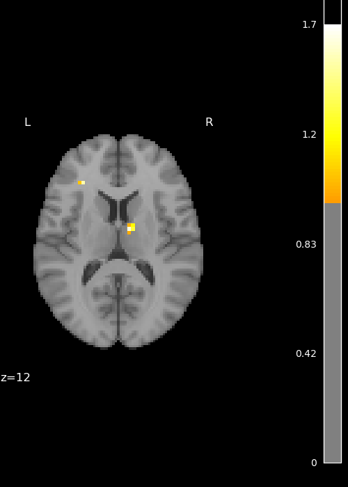

Note
Click here to download the full example code or to run this example in your browser via Binder
9.4.4.8.7. Massively univariate analysis of a motor task from the Localizer dataset#
This example shows the results obtained in a massively univariate analysis performed at the inter-subject level with various methods. We use the [left button press (auditory cue)] task from the Localizer dataset and seek association between the contrast values and a variate that measures the speed of pseudo-word reading. No confounding variate is included in the model.
A standard ANOVA is performed. Data smoothed at 5 voxels FWHM are used.
A permuted Ordinary Least Squares algorithm is run at each voxel. Data smoothed at 5 voxels FWHM are used.
# Author: Virgile Fritsch, <virgile.fritsch@inria.fr>, May. 2014
import numpy as np
import matplotlib.pyplot as plt
from nilearn import datasets
from nilearn.maskers import NiftiMasker
from nilearn.mass_univariate import permuted_ols
from nilearn.image import get_data
Load Localizer contrast
n_samples = 94
localizer_dataset = datasets.fetch_localizer_contrasts(
['left button press (auditory cue)'],
n_subjects=n_samples, legacy_format=False
)
# print basic information on the dataset
print('First contrast nifti image (3D) is located at: %s' %
localizer_dataset.cmaps[0])
tested_var = localizer_dataset.ext_vars['pseudo']
# Quality check / Remove subjects with bad tested variate
mask_quality_check = np.where(
np.logical_not(np.isnan(tested_var))
)[0]
n_samples = mask_quality_check.size
contrast_map_filenames = [localizer_dataset.cmaps[i]
for i in mask_quality_check]
tested_var = tested_var[mask_quality_check].values.reshape((-1, 1))
print("Actual number of subjects after quality check: %d" % n_samples)
First contrast nifti image (3D) is located at: /home/alexis/nilearn_data/brainomics_localizer/brainomics_data/S01/cmaps_LeftAuditoryClick.nii.gz
Actual number of subjects after quality check: 89
Mask data
nifti_masker = NiftiMasker(
smoothing_fwhm=5,
memory='nilearn_cache', memory_level=1) # cache options
fmri_masked = nifti_masker.fit_transform(contrast_map_filenames)
Anova (parametric F-scores)
from sklearn.feature_selection import f_regression
_, pvals_anova = f_regression(fmri_masked, tested_var, center=True)
pvals_anova *= fmri_masked.shape[1]
pvals_anova[np.isnan(pvals_anova)] = 1
pvals_anova[pvals_anova > 1] = 1
neg_log_pvals_anova = - np.log10(pvals_anova)
neg_log_pvals_anova_unmasked = nifti_masker.inverse_transform(
neg_log_pvals_anova)
/home/alexis/anaconda3/envs/nilearn/lib/python3.10/site-packages/sklearn/utils/validation.py:993: DataConversionWarning:
A column-vector y was passed when a 1d array was expected. Please change the shape of y to (n_samples, ), for example using ravel().
Perform massively univariate analysis with permuted OLS
neg_log_pvals_permuted_ols, _, _ = permuted_ols(
tested_var, fmri_masked,
model_intercept=True,
n_perm=5000, # 5,000 for the sake of time. Idealy, this should be 10,000
verbose=1, # display progress bar
n_jobs=1) # can be changed to use more CPUs
neg_log_pvals_permuted_ols_unmasked = nifti_masker.inverse_transform(
np.ravel(neg_log_pvals_permuted_ols))
[Parallel(n_jobs=1)]: Using backend SequentialBackend with 1 concurrent workers.
Job #1, processed 0/5000 permutations (0.00%, 139 seconds remaining)
Job #1, processed 10/5000 permutations (0.20%, 79 seconds remaining)
Job #1, processed 20/5000 permutations (0.40%, 71 seconds remaining)
Job #1, processed 30/5000 permutations (0.60%, 68 seconds remaining)
Job #1, processed 40/5000 permutations (0.80%, 62 seconds remaining)
Job #1, processed 50/5000 permutations (1.00%, 59 seconds remaining)
Job #1, processed 60/5000 permutations (1.20%, 61 seconds remaining)
Job #1, processed 70/5000 permutations (1.40%, 58 seconds remaining)
Job #1, processed 80/5000 permutations (1.60%, 58 seconds remaining)
Job #1, processed 90/5000 permutations (1.80%, 58 seconds remaining)
Job #1, processed 100/5000 permutations (2.00%, 57 seconds remaining)
Job #1, processed 110/5000 permutations (2.20%, 54 seconds remaining)
Job #1, processed 120/5000 permutations (2.40%, 53 seconds remaining)
Job #1, processed 130/5000 permutations (2.60%, 51 seconds remaining)
Job #1, processed 140/5000 permutations (2.80%, 50 seconds remaining)
Job #1, processed 150/5000 permutations (3.00%, 48 seconds remaining)
Job #1, processed 160/5000 permutations (3.20%, 47 seconds remaining)
Job #1, processed 170/5000 permutations (3.40%, 46 seconds remaining)
Job #1, processed 180/5000 permutations (3.60%, 46 seconds remaining)
Job #1, processed 190/5000 permutations (3.80%, 46 seconds remaining)
Job #1, processed 200/5000 permutations (4.00%, 46 seconds remaining)
Job #1, processed 210/5000 permutations (4.20%, 45 seconds remaining)
Job #1, processed 220/5000 permutations (4.40%, 45 seconds remaining)
Job #1, processed 230/5000 permutations (4.60%, 47 seconds remaining)
Job #1, processed 240/5000 permutations (4.80%, 47 seconds remaining)
Job #1, processed 250/5000 permutations (5.00%, 46 seconds remaining)
Job #1, processed 260/5000 permutations (5.20%, 45 seconds remaining)
Job #1, processed 270/5000 permutations (5.40%, 45 seconds remaining)
Job #1, processed 280/5000 permutations (5.60%, 44 seconds remaining)
Job #1, processed 290/5000 permutations (5.80%, 44 seconds remaining)
Job #1, processed 300/5000 permutations (6.00%, 43 seconds remaining)
Job #1, processed 310/5000 permutations (6.20%, 44 seconds remaining)
Job #1, processed 320/5000 permutations (6.40%, 44 seconds remaining)
Job #1, processed 330/5000 permutations (6.60%, 44 seconds remaining)
Job #1, processed 340/5000 permutations (6.80%, 43 seconds remaining)
Job #1, processed 350/5000 permutations (7.00%, 43 seconds remaining)
Job #1, processed 360/5000 permutations (7.20%, 43 seconds remaining)
Job #1, processed 370/5000 permutations (7.40%, 42 seconds remaining)
Job #1, processed 380/5000 permutations (7.60%, 42 seconds remaining)
Job #1, processed 390/5000 permutations (7.80%, 42 seconds remaining)
Job #1, processed 400/5000 permutations (8.00%, 42 seconds remaining)
Job #1, processed 410/5000 permutations (8.20%, 42 seconds remaining)
Job #1, processed 420/5000 permutations (8.40%, 42 seconds remaining)
Job #1, processed 430/5000 permutations (8.60%, 41 seconds remaining)
Job #1, processed 440/5000 permutations (8.80%, 41 seconds remaining)
Job #1, processed 450/5000 permutations (9.00%, 41 seconds remaining)
Job #1, processed 460/5000 permutations (9.20%, 41 seconds remaining)
Job #1, processed 470/5000 permutations (9.40%, 40 seconds remaining)
Job #1, processed 480/5000 permutations (9.60%, 40 seconds remaining)
Job #1, processed 490/5000 permutations (9.80%, 40 seconds remaining)
Job #1, processed 500/5000 permutations (10.00%, 39 seconds remaining)
Job #1, processed 510/5000 permutations (10.20%, 39 seconds remaining)
Job #1, processed 520/5000 permutations (10.40%, 39 seconds remaining)
Job #1, processed 530/5000 permutations (10.60%, 39 seconds remaining)
Job #1, processed 540/5000 permutations (10.80%, 38 seconds remaining)
Job #1, processed 550/5000 permutations (11.00%, 38 seconds remaining)
Job #1, processed 560/5000 permutations (11.20%, 38 seconds remaining)
Job #1, processed 570/5000 permutations (11.40%, 37 seconds remaining)
Job #1, processed 580/5000 permutations (11.60%, 37 seconds remaining)
Job #1, processed 590/5000 permutations (11.80%, 37 seconds remaining)
Job #1, processed 600/5000 permutations (12.00%, 37 seconds remaining)
Job #1, processed 610/5000 permutations (12.20%, 37 seconds remaining)
Job #1, processed 620/5000 permutations (12.40%, 36 seconds remaining)
Job #1, processed 630/5000 permutations (12.60%, 36 seconds remaining)
Job #1, processed 640/5000 permutations (12.80%, 36 seconds remaining)
Job #1, processed 650/5000 permutations (13.00%, 36 seconds remaining)
Job #1, processed 660/5000 permutations (13.20%, 36 seconds remaining)
Job #1, processed 670/5000 permutations (13.40%, 36 seconds remaining)
Job #1, processed 680/5000 permutations (13.60%, 36 seconds remaining)
Job #1, processed 690/5000 permutations (13.80%, 35 seconds remaining)
Job #1, processed 700/5000 permutations (14.00%, 35 seconds remaining)
Job #1, processed 710/5000 permutations (14.20%, 35 seconds remaining)
Job #1, processed 720/5000 permutations (14.40%, 35 seconds remaining)
Job #1, processed 730/5000 permutations (14.60%, 35 seconds remaining)
Job #1, processed 740/5000 permutations (14.80%, 34 seconds remaining)
Job #1, processed 750/5000 permutations (15.00%, 35 seconds remaining)
Job #1, processed 760/5000 permutations (15.20%, 34 seconds remaining)
Job #1, processed 770/5000 permutations (15.40%, 34 seconds remaining)
Job #1, processed 780/5000 permutations (15.60%, 34 seconds remaining)
Job #1, processed 790/5000 permutations (15.80%, 34 seconds remaining)
Job #1, processed 800/5000 permutations (16.00%, 34 seconds remaining)
Job #1, processed 810/5000 permutations (16.20%, 33 seconds remaining)
Job #1, processed 820/5000 permutations (16.40%, 33 seconds remaining)
Job #1, processed 830/5000 permutations (16.60%, 33 seconds remaining)
Job #1, processed 840/5000 permutations (16.80%, 33 seconds remaining)
Job #1, processed 850/5000 permutations (17.00%, 33 seconds remaining)
Job #1, processed 860/5000 permutations (17.20%, 33 seconds remaining)
Job #1, processed 870/5000 permutations (17.40%, 32 seconds remaining)
Job #1, processed 880/5000 permutations (17.60%, 32 seconds remaining)
Job #1, processed 890/5000 permutations (17.80%, 32 seconds remaining)
Job #1, processed 900/5000 permutations (18.00%, 32 seconds remaining)
Job #1, processed 910/5000 permutations (18.20%, 32 seconds remaining)
Job #1, processed 920/5000 permutations (18.40%, 32 seconds remaining)
Job #1, processed 930/5000 permutations (18.60%, 32 seconds remaining)
Job #1, processed 940/5000 permutations (18.80%, 31 seconds remaining)
Job #1, processed 950/5000 permutations (19.00%, 31 seconds remaining)
Job #1, processed 960/5000 permutations (19.20%, 31 seconds remaining)
Job #1, processed 970/5000 permutations (19.40%, 31 seconds remaining)
Job #1, processed 980/5000 permutations (19.60%, 31 seconds remaining)
Job #1, processed 990/5000 permutations (19.80%, 31 seconds remaining)
Job #1, processed 1000/5000 permutations (20.00%, 31 seconds remaining)
Job #1, processed 1010/5000 permutations (20.20%, 31 seconds remaining)
Job #1, processed 1020/5000 permutations (20.40%, 31 seconds remaining)
Job #1, processed 1030/5000 permutations (20.60%, 30 seconds remaining)
Job #1, processed 1040/5000 permutations (20.80%, 30 seconds remaining)
Job #1, processed 1050/5000 permutations (21.00%, 30 seconds remaining)
Job #1, processed 1060/5000 permutations (21.20%, 30 seconds remaining)
Job #1, processed 1070/5000 permutations (21.40%, 30 seconds remaining)
Job #1, processed 1080/5000 permutations (21.60%, 30 seconds remaining)
Job #1, processed 1090/5000 permutations (21.80%, 30 seconds remaining)
Job #1, processed 1100/5000 permutations (22.00%, 30 seconds remaining)
Job #1, processed 1110/5000 permutations (22.20%, 30 seconds remaining)
Job #1, processed 1120/5000 permutations (22.40%, 29 seconds remaining)
Job #1, processed 1130/5000 permutations (22.60%, 29 seconds remaining)
Job #1, processed 1140/5000 permutations (22.80%, 29 seconds remaining)
Job #1, processed 1150/5000 permutations (23.00%, 29 seconds remaining)
Job #1, processed 1160/5000 permutations (23.20%, 29 seconds remaining)
Job #1, processed 1170/5000 permutations (23.40%, 29 seconds remaining)
Job #1, processed 1180/5000 permutations (23.60%, 29 seconds remaining)
Job #1, processed 1190/5000 permutations (23.80%, 29 seconds remaining)
Job #1, processed 1200/5000 permutations (24.00%, 29 seconds remaining)
Job #1, processed 1210/5000 permutations (24.20%, 29 seconds remaining)
Job #1, processed 1220/5000 permutations (24.40%, 29 seconds remaining)
Job #1, processed 1230/5000 permutations (24.60%, 28 seconds remaining)
Job #1, processed 1240/5000 permutations (24.80%, 28 seconds remaining)
Job #1, processed 1250/5000 permutations (25.00%, 28 seconds remaining)
Job #1, processed 1260/5000 permutations (25.20%, 28 seconds remaining)
Job #1, processed 1270/5000 permutations (25.40%, 28 seconds remaining)
Job #1, processed 1280/5000 permutations (25.60%, 28 seconds remaining)
Job #1, processed 1290/5000 permutations (25.80%, 28 seconds remaining)
Job #1, processed 1300/5000 permutations (26.00%, 28 seconds remaining)
Job #1, processed 1310/5000 permutations (26.20%, 28 seconds remaining)
Job #1, processed 1320/5000 permutations (26.40%, 28 seconds remaining)
Job #1, processed 1330/5000 permutations (26.60%, 28 seconds remaining)
Job #1, processed 1340/5000 permutations (26.80%, 28 seconds remaining)
Job #1, processed 1350/5000 permutations (27.00%, 28 seconds remaining)
Job #1, processed 1360/5000 permutations (27.20%, 28 seconds remaining)
Job #1, processed 1370/5000 permutations (27.40%, 28 seconds remaining)
Job #1, processed 1380/5000 permutations (27.60%, 28 seconds remaining)
Job #1, processed 1390/5000 permutations (27.80%, 27 seconds remaining)
Job #1, processed 1400/5000 permutations (28.00%, 27 seconds remaining)
Job #1, processed 1410/5000 permutations (28.20%, 27 seconds remaining)
Job #1, processed 1420/5000 permutations (28.40%, 27 seconds remaining)
Job #1, processed 1430/5000 permutations (28.60%, 27 seconds remaining)
Job #1, processed 1440/5000 permutations (28.80%, 27 seconds remaining)
Job #1, processed 1450/5000 permutations (29.00%, 27 seconds remaining)
Job #1, processed 1460/5000 permutations (29.20%, 27 seconds remaining)
Job #1, processed 1470/5000 permutations (29.40%, 27 seconds remaining)
Job #1, processed 1480/5000 permutations (29.60%, 27 seconds remaining)
Job #1, processed 1490/5000 permutations (29.80%, 27 seconds remaining)
Job #1, processed 1500/5000 permutations (30.00%, 27 seconds remaining)
Job #1, processed 1510/5000 permutations (30.20%, 27 seconds remaining)
Job #1, processed 1520/5000 permutations (30.40%, 27 seconds remaining)
Job #1, processed 1530/5000 permutations (30.60%, 26 seconds remaining)
Job #1, processed 1540/5000 permutations (30.80%, 26 seconds remaining)
Job #1, processed 1550/5000 permutations (31.00%, 26 seconds remaining)
Job #1, processed 1560/5000 permutations (31.20%, 26 seconds remaining)
Job #1, processed 1570/5000 permutations (31.40%, 26 seconds remaining)
Job #1, processed 1580/5000 permutations (31.60%, 26 seconds remaining)
Job #1, processed 1590/5000 permutations (31.80%, 26 seconds remaining)
Job #1, processed 1600/5000 permutations (32.00%, 26 seconds remaining)
Job #1, processed 1610/5000 permutations (32.20%, 26 seconds remaining)
Job #1, processed 1620/5000 permutations (32.40%, 26 seconds remaining)
Job #1, processed 1630/5000 permutations (32.60%, 26 seconds remaining)
Job #1, processed 1640/5000 permutations (32.80%, 25 seconds remaining)
Job #1, processed 1650/5000 permutations (33.00%, 25 seconds remaining)
Job #1, processed 1660/5000 permutations (33.20%, 25 seconds remaining)
Job #1, processed 1670/5000 permutations (33.40%, 25 seconds remaining)
Job #1, processed 1680/5000 permutations (33.60%, 25 seconds remaining)
Job #1, processed 1690/5000 permutations (33.80%, 25 seconds remaining)
Job #1, processed 1700/5000 permutations (34.00%, 25 seconds remaining)
Job #1, processed 1710/5000 permutations (34.20%, 25 seconds remaining)
Job #1, processed 1720/5000 permutations (34.40%, 25 seconds remaining)
Job #1, processed 1730/5000 permutations (34.60%, 25 seconds remaining)
Job #1, processed 1740/5000 permutations (34.80%, 24 seconds remaining)
Job #1, processed 1750/5000 permutations (35.00%, 24 seconds remaining)
Job #1, processed 1760/5000 permutations (35.20%, 24 seconds remaining)
Job #1, processed 1770/5000 permutations (35.40%, 24 seconds remaining)
Job #1, processed 1780/5000 permutations (35.60%, 24 seconds remaining)
Job #1, processed 1790/5000 permutations (35.80%, 24 seconds remaining)
Job #1, processed 1800/5000 permutations (36.00%, 24 seconds remaining)
Job #1, processed 1810/5000 permutations (36.20%, 24 seconds remaining)
Job #1, processed 1820/5000 permutations (36.40%, 24 seconds remaining)
Job #1, processed 1830/5000 permutations (36.60%, 24 seconds remaining)
Job #1, processed 1840/5000 permutations (36.80%, 24 seconds remaining)
Job #1, processed 1850/5000 permutations (37.00%, 24 seconds remaining)
Job #1, processed 1860/5000 permutations (37.20%, 24 seconds remaining)
Job #1, processed 1870/5000 permutations (37.40%, 24 seconds remaining)
Job #1, processed 1880/5000 permutations (37.60%, 24 seconds remaining)
Job #1, processed 1890/5000 permutations (37.80%, 24 seconds remaining)
Job #1, processed 1900/5000 permutations (38.00%, 24 seconds remaining)
Job #1, processed 1910/5000 permutations (38.20%, 24 seconds remaining)
Job #1, processed 1920/5000 permutations (38.40%, 24 seconds remaining)
Job #1, processed 1930/5000 permutations (38.60%, 24 seconds remaining)
Job #1, processed 1940/5000 permutations (38.80%, 24 seconds remaining)
Job #1, processed 1950/5000 permutations (39.00%, 24 seconds remaining)
Job #1, processed 1960/5000 permutations (39.20%, 24 seconds remaining)
Job #1, processed 1970/5000 permutations (39.40%, 24 seconds remaining)
Job #1, processed 1980/5000 permutations (39.60%, 23 seconds remaining)
Job #1, processed 1990/5000 permutations (39.80%, 23 seconds remaining)
Job #1, processed 2000/5000 permutations (40.00%, 23 seconds remaining)
Job #1, processed 2010/5000 permutations (40.20%, 23 seconds remaining)
Job #1, processed 2020/5000 permutations (40.40%, 23 seconds remaining)
Job #1, processed 2030/5000 permutations (40.60%, 23 seconds remaining)
Job #1, processed 2040/5000 permutations (40.80%, 23 seconds remaining)
Job #1, processed 2050/5000 permutations (41.00%, 23 seconds remaining)
Job #1, processed 2060/5000 permutations (41.20%, 23 seconds remaining)
Job #1, processed 2070/5000 permutations (41.40%, 23 seconds remaining)
Job #1, processed 2080/5000 permutations (41.60%, 23 seconds remaining)
Job #1, processed 2090/5000 permutations (41.80%, 23 seconds remaining)
Job #1, processed 2100/5000 permutations (42.00%, 22 seconds remaining)
Job #1, processed 2110/5000 permutations (42.20%, 22 seconds remaining)
Job #1, processed 2120/5000 permutations (42.40%, 22 seconds remaining)
Job #1, processed 2130/5000 permutations (42.60%, 22 seconds remaining)
Job #1, processed 2140/5000 permutations (42.80%, 22 seconds remaining)
Job #1, processed 2150/5000 permutations (43.00%, 22 seconds remaining)
Job #1, processed 2160/5000 permutations (43.20%, 22 seconds remaining)
Job #1, processed 2170/5000 permutations (43.40%, 22 seconds remaining)
Job #1, processed 2180/5000 permutations (43.60%, 22 seconds remaining)
Job #1, processed 2190/5000 permutations (43.80%, 22 seconds remaining)
Job #1, processed 2200/5000 permutations (44.00%, 22 seconds remaining)
Job #1, processed 2210/5000 permutations (44.20%, 21 seconds remaining)
Job #1, processed 2220/5000 permutations (44.40%, 21 seconds remaining)
Job #1, processed 2230/5000 permutations (44.60%, 21 seconds remaining)
Job #1, processed 2240/5000 permutations (44.80%, 21 seconds remaining)
Job #1, processed 2250/5000 permutations (45.00%, 21 seconds remaining)
Job #1, processed 2260/5000 permutations (45.20%, 21 seconds remaining)
Job #1, processed 2270/5000 permutations (45.40%, 21 seconds remaining)
Job #1, processed 2280/5000 permutations (45.60%, 21 seconds remaining)
Job #1, processed 2290/5000 permutations (45.80%, 21 seconds remaining)
Job #1, processed 2300/5000 permutations (46.00%, 21 seconds remaining)
Job #1, processed 2310/5000 permutations (46.20%, 21 seconds remaining)
Job #1, processed 2320/5000 permutations (46.40%, 21 seconds remaining)
Job #1, processed 2330/5000 permutations (46.60%, 21 seconds remaining)
Job #1, processed 2340/5000 permutations (46.80%, 21 seconds remaining)
Job #1, processed 2350/5000 permutations (47.00%, 21 seconds remaining)
Job #1, processed 2360/5000 permutations (47.20%, 21 seconds remaining)
Job #1, processed 2370/5000 permutations (47.40%, 20 seconds remaining)
Job #1, processed 2380/5000 permutations (47.60%, 20 seconds remaining)
Job #1, processed 2390/5000 permutations (47.80%, 20 seconds remaining)
Job #1, processed 2400/5000 permutations (48.00%, 20 seconds remaining)
Job #1, processed 2410/5000 permutations (48.20%, 20 seconds remaining)
Job #1, processed 2420/5000 permutations (48.40%, 20 seconds remaining)
Job #1, processed 2430/5000 permutations (48.60%, 20 seconds remaining)
Job #1, processed 2440/5000 permutations (48.80%, 20 seconds remaining)
Job #1, processed 2450/5000 permutations (49.00%, 20 seconds remaining)
Job #1, processed 2460/5000 permutations (49.20%, 20 seconds remaining)
Job #1, processed 2470/5000 permutations (49.40%, 20 seconds remaining)
Job #1, processed 2480/5000 permutations (49.60%, 20 seconds remaining)
Job #1, processed 2490/5000 permutations (49.80%, 20 seconds remaining)
Job #1, processed 2500/5000 permutations (50.00%, 20 seconds remaining)
Job #1, processed 2510/5000 permutations (50.20%, 20 seconds remaining)
Job #1, processed 2520/5000 permutations (50.40%, 20 seconds remaining)
Job #1, processed 2530/5000 permutations (50.60%, 20 seconds remaining)
Job #1, processed 2540/5000 permutations (50.80%, 19 seconds remaining)
Job #1, processed 2550/5000 permutations (51.00%, 19 seconds remaining)
Job #1, processed 2560/5000 permutations (51.20%, 19 seconds remaining)
Job #1, processed 2570/5000 permutations (51.40%, 19 seconds remaining)
Job #1, processed 2580/5000 permutations (51.60%, 19 seconds remaining)
Job #1, processed 2590/5000 permutations (51.80%, 19 seconds remaining)
Job #1, processed 2600/5000 permutations (52.00%, 19 seconds remaining)
Job #1, processed 2610/5000 permutations (52.20%, 19 seconds remaining)
Job #1, processed 2620/5000 permutations (52.40%, 19 seconds remaining)
Job #1, processed 2630/5000 permutations (52.60%, 19 seconds remaining)
Job #1, processed 2640/5000 permutations (52.80%, 19 seconds remaining)
Job #1, processed 2650/5000 permutations (53.00%, 19 seconds remaining)
Job #1, processed 2660/5000 permutations (53.20%, 18 seconds remaining)
Job #1, processed 2670/5000 permutations (53.40%, 18 seconds remaining)
Job #1, processed 2680/5000 permutations (53.60%, 18 seconds remaining)
Job #1, processed 2690/5000 permutations (53.80%, 18 seconds remaining)
Job #1, processed 2700/5000 permutations (54.00%, 18 seconds remaining)
Job #1, processed 2710/5000 permutations (54.20%, 18 seconds remaining)
Job #1, processed 2720/5000 permutations (54.40%, 18 seconds remaining)
Job #1, processed 2730/5000 permutations (54.60%, 18 seconds remaining)
Job #1, processed 2740/5000 permutations (54.80%, 18 seconds remaining)
Job #1, processed 2750/5000 permutations (55.00%, 18 seconds remaining)
Job #1, processed 2760/5000 permutations (55.20%, 18 seconds remaining)
Job #1, processed 2770/5000 permutations (55.40%, 18 seconds remaining)
Job #1, processed 2780/5000 permutations (55.60%, 18 seconds remaining)
Job #1, processed 2790/5000 permutations (55.80%, 18 seconds remaining)
Job #1, processed 2800/5000 permutations (56.00%, 17 seconds remaining)
Job #1, processed 2810/5000 permutations (56.20%, 17 seconds remaining)
Job #1, processed 2820/5000 permutations (56.40%, 17 seconds remaining)
Job #1, processed 2830/5000 permutations (56.60%, 17 seconds remaining)
Job #1, processed 2840/5000 permutations (56.80%, 17 seconds remaining)
Job #1, processed 2850/5000 permutations (57.00%, 17 seconds remaining)
Job #1, processed 2860/5000 permutations (57.20%, 17 seconds remaining)
Job #1, processed 2870/5000 permutations (57.40%, 17 seconds remaining)
Job #1, processed 2880/5000 permutations (57.60%, 17 seconds remaining)
Job #1, processed 2890/5000 permutations (57.80%, 17 seconds remaining)
Job #1, processed 2900/5000 permutations (58.00%, 17 seconds remaining)
Job #1, processed 2910/5000 permutations (58.20%, 17 seconds remaining)
Job #1, processed 2920/5000 permutations (58.40%, 17 seconds remaining)
Job #1, processed 2930/5000 permutations (58.60%, 16 seconds remaining)
Job #1, processed 2940/5000 permutations (58.80%, 16 seconds remaining)
Job #1, processed 2950/5000 permutations (59.00%, 16 seconds remaining)
Job #1, processed 2960/5000 permutations (59.20%, 16 seconds remaining)
Job #1, processed 2970/5000 permutations (59.40%, 16 seconds remaining)
Job #1, processed 2980/5000 permutations (59.60%, 16 seconds remaining)
Job #1, processed 2990/5000 permutations (59.80%, 16 seconds remaining)
Job #1, processed 3000/5000 permutations (60.00%, 16 seconds remaining)
Job #1, processed 3010/5000 permutations (60.20%, 16 seconds remaining)
Job #1, processed 3020/5000 permutations (60.40%, 16 seconds remaining)
Job #1, processed 3030/5000 permutations (60.60%, 16 seconds remaining)
Job #1, processed 3040/5000 permutations (60.80%, 16 seconds remaining)
Job #1, processed 3050/5000 permutations (61.00%, 15 seconds remaining)
Job #1, processed 3060/5000 permutations (61.20%, 15 seconds remaining)
Job #1, processed 3070/5000 permutations (61.40%, 15 seconds remaining)
Job #1, processed 3080/5000 permutations (61.60%, 15 seconds remaining)
Job #1, processed 3090/5000 permutations (61.80%, 15 seconds remaining)
Job #1, processed 3100/5000 permutations (62.00%, 15 seconds remaining)
Job #1, processed 3110/5000 permutations (62.20%, 15 seconds remaining)
Job #1, processed 3120/5000 permutations (62.40%, 15 seconds remaining)
Job #1, processed 3130/5000 permutations (62.60%, 15 seconds remaining)
Job #1, processed 3140/5000 permutations (62.80%, 15 seconds remaining)
Job #1, processed 3150/5000 permutations (63.00%, 15 seconds remaining)
Job #1, processed 3160/5000 permutations (63.20%, 14 seconds remaining)
Job #1, processed 3170/5000 permutations (63.40%, 14 seconds remaining)
Job #1, processed 3180/5000 permutations (63.60%, 14 seconds remaining)
Job #1, processed 3190/5000 permutations (63.80%, 14 seconds remaining)
Job #1, processed 3200/5000 permutations (64.00%, 14 seconds remaining)
Job #1, processed 3210/5000 permutations (64.20%, 14 seconds remaining)
Job #1, processed 3220/5000 permutations (64.40%, 14 seconds remaining)
Job #1, processed 3230/5000 permutations (64.60%, 14 seconds remaining)
Job #1, processed 3240/5000 permutations (64.80%, 14 seconds remaining)
Job #1, processed 3250/5000 permutations (65.00%, 14 seconds remaining)
Job #1, processed 3260/5000 permutations (65.20%, 14 seconds remaining)
Job #1, processed 3270/5000 permutations (65.40%, 14 seconds remaining)
Job #1, processed 3280/5000 permutations (65.60%, 13 seconds remaining)
Job #1, processed 3290/5000 permutations (65.80%, 13 seconds remaining)
Job #1, processed 3300/5000 permutations (66.00%, 13 seconds remaining)
Job #1, processed 3310/5000 permutations (66.20%, 13 seconds remaining)
Job #1, processed 3320/5000 permutations (66.40%, 13 seconds remaining)
Job #1, processed 3330/5000 permutations (66.60%, 13 seconds remaining)
Job #1, processed 3340/5000 permutations (66.80%, 13 seconds remaining)
Job #1, processed 3350/5000 permutations (67.00%, 13 seconds remaining)
Job #1, processed 3360/5000 permutations (67.20%, 13 seconds remaining)
Job #1, processed 3370/5000 permutations (67.40%, 13 seconds remaining)
Job #1, processed 3380/5000 permutations (67.60%, 13 seconds remaining)
Job #1, processed 3390/5000 permutations (67.80%, 12 seconds remaining)
Job #1, processed 3400/5000 permutations (68.00%, 12 seconds remaining)
Job #1, processed 3410/5000 permutations (68.20%, 12 seconds remaining)
Job #1, processed 3420/5000 permutations (68.40%, 12 seconds remaining)
Job #1, processed 3430/5000 permutations (68.60%, 12 seconds remaining)
Job #1, processed 3440/5000 permutations (68.80%, 12 seconds remaining)
Job #1, processed 3450/5000 permutations (69.00%, 12 seconds remaining)
Job #1, processed 3460/5000 permutations (69.20%, 12 seconds remaining)
Job #1, processed 3470/5000 permutations (69.40%, 12 seconds remaining)
Job #1, processed 3480/5000 permutations (69.60%, 12 seconds remaining)
Job #1, processed 3490/5000 permutations (69.80%, 12 seconds remaining)
Job #1, processed 3500/5000 permutations (70.00%, 12 seconds remaining)
Job #1, processed 3510/5000 permutations (70.20%, 12 seconds remaining)
Job #1, processed 3520/5000 permutations (70.40%, 12 seconds remaining)
Job #1, processed 3530/5000 permutations (70.60%, 11 seconds remaining)
Job #1, processed 3540/5000 permutations (70.80%, 11 seconds remaining)
Job #1, processed 3550/5000 permutations (71.00%, 11 seconds remaining)
Job #1, processed 3560/5000 permutations (71.20%, 11 seconds remaining)
Job #1, processed 3570/5000 permutations (71.40%, 11 seconds remaining)
Job #1, processed 3580/5000 permutations (71.60%, 11 seconds remaining)
Job #1, processed 3590/5000 permutations (71.80%, 11 seconds remaining)
Job #1, processed 3600/5000 permutations (72.00%, 11 seconds remaining)
Job #1, processed 3610/5000 permutations (72.20%, 11 seconds remaining)
Job #1, processed 3620/5000 permutations (72.40%, 11 seconds remaining)
Job #1, processed 3630/5000 permutations (72.60%, 11 seconds remaining)
Job #1, processed 3640/5000 permutations (72.80%, 11 seconds remaining)
Job #1, processed 3650/5000 permutations (73.00%, 10 seconds remaining)
Job #1, processed 3660/5000 permutations (73.20%, 10 seconds remaining)
Job #1, processed 3670/5000 permutations (73.40%, 10 seconds remaining)
Job #1, processed 3680/5000 permutations (73.60%, 10 seconds remaining)
Job #1, processed 3690/5000 permutations (73.80%, 10 seconds remaining)
Job #1, processed 3700/5000 permutations (74.00%, 10 seconds remaining)
Job #1, processed 3710/5000 permutations (74.20%, 10 seconds remaining)
Job #1, processed 3720/5000 permutations (74.40%, 10 seconds remaining)
Job #1, processed 3730/5000 permutations (74.60%, 10 seconds remaining)
Job #1, processed 3740/5000 permutations (74.80%, 10 seconds remaining)
Job #1, processed 3750/5000 permutations (75.00%, 10 seconds remaining)
Job #1, processed 3760/5000 permutations (75.20%, 10 seconds remaining)
Job #1, processed 3770/5000 permutations (75.40%, 10 seconds remaining)
Job #1, processed 3780/5000 permutations (75.60%, 10 seconds remaining)
Job #1, processed 3790/5000 permutations (75.80%, 9 seconds remaining)
Job #1, processed 3800/5000 permutations (76.00%, 9 seconds remaining)
Job #1, processed 3810/5000 permutations (76.20%, 9 seconds remaining)
Job #1, processed 3820/5000 permutations (76.40%, 9 seconds remaining)
Job #1, processed 3830/5000 permutations (76.60%, 9 seconds remaining)
Job #1, processed 3840/5000 permutations (76.80%, 9 seconds remaining)
Job #1, processed 3850/5000 permutations (77.00%, 9 seconds remaining)
Job #1, processed 3860/5000 permutations (77.20%, 9 seconds remaining)
Job #1, processed 3870/5000 permutations (77.40%, 9 seconds remaining)
Job #1, processed 3880/5000 permutations (77.60%, 9 seconds remaining)
Job #1, processed 3890/5000 permutations (77.80%, 9 seconds remaining)
Job #1, processed 3900/5000 permutations (78.00%, 9 seconds remaining)
Job #1, processed 3910/5000 permutations (78.20%, 8 seconds remaining)
Job #1, processed 3920/5000 permutations (78.40%, 8 seconds remaining)
Job #1, processed 3930/5000 permutations (78.60%, 8 seconds remaining)
Job #1, processed 3940/5000 permutations (78.80%, 8 seconds remaining)
Job #1, processed 3950/5000 permutations (79.00%, 8 seconds remaining)
Job #1, processed 3960/5000 permutations (79.20%, 8 seconds remaining)
Job #1, processed 3970/5000 permutations (79.40%, 8 seconds remaining)
Job #1, processed 3980/5000 permutations (79.60%, 8 seconds remaining)
Job #1, processed 3990/5000 permutations (79.80%, 8 seconds remaining)
Job #1, processed 4000/5000 permutations (80.00%, 8 seconds remaining)
Job #1, processed 4010/5000 permutations (80.20%, 8 seconds remaining)
Job #1, processed 4020/5000 permutations (80.40%, 8 seconds remaining)
Job #1, processed 4030/5000 permutations (80.60%, 8 seconds remaining)
Job #1, processed 4040/5000 permutations (80.80%, 7 seconds remaining)
Job #1, processed 4050/5000 permutations (81.00%, 7 seconds remaining)
Job #1, processed 4060/5000 permutations (81.20%, 7 seconds remaining)
Job #1, processed 4070/5000 permutations (81.40%, 7 seconds remaining)
Job #1, processed 4080/5000 permutations (81.60%, 7 seconds remaining)
Job #1, processed 4090/5000 permutations (81.80%, 7 seconds remaining)
Job #1, processed 4100/5000 permutations (82.00%, 7 seconds remaining)
Job #1, processed 4110/5000 permutations (82.20%, 7 seconds remaining)
Job #1, processed 4120/5000 permutations (82.40%, 7 seconds remaining)
Job #1, processed 4130/5000 permutations (82.60%, 7 seconds remaining)
Job #1, processed 4140/5000 permutations (82.80%, 7 seconds remaining)
Job #1, processed 4150/5000 permutations (83.00%, 7 seconds remaining)
Job #1, processed 4160/5000 permutations (83.20%, 7 seconds remaining)
Job #1, processed 4170/5000 permutations (83.40%, 6 seconds remaining)
Job #1, processed 4180/5000 permutations (83.60%, 6 seconds remaining)
Job #1, processed 4190/5000 permutations (83.80%, 6 seconds remaining)
Job #1, processed 4200/5000 permutations (84.00%, 6 seconds remaining)
Job #1, processed 4210/5000 permutations (84.20%, 6 seconds remaining)
Job #1, processed 4220/5000 permutations (84.40%, 6 seconds remaining)
Job #1, processed 4230/5000 permutations (84.60%, 6 seconds remaining)
Job #1, processed 4240/5000 permutations (84.80%, 6 seconds remaining)
Job #1, processed 4250/5000 permutations (85.00%, 6 seconds remaining)
Job #1, processed 4260/5000 permutations (85.20%, 6 seconds remaining)
Job #1, processed 4270/5000 permutations (85.40%, 6 seconds remaining)
Job #1, processed 4280/5000 permutations (85.60%, 6 seconds remaining)
Job #1, processed 4290/5000 permutations (85.80%, 6 seconds remaining)
Job #1, processed 4300/5000 permutations (86.00%, 5 seconds remaining)
Job #1, processed 4310/5000 permutations (86.20%, 5 seconds remaining)
Job #1, processed 4320/5000 permutations (86.40%, 5 seconds remaining)
Job #1, processed 4330/5000 permutations (86.60%, 5 seconds remaining)
Job #1, processed 4340/5000 permutations (86.80%, 5 seconds remaining)
Job #1, processed 4350/5000 permutations (87.00%, 5 seconds remaining)
Job #1, processed 4360/5000 permutations (87.20%, 5 seconds remaining)
Job #1, processed 4370/5000 permutations (87.40%, 5 seconds remaining)
Job #1, processed 4380/5000 permutations (87.60%, 5 seconds remaining)
Job #1, processed 4390/5000 permutations (87.80%, 5 seconds remaining)
Job #1, processed 4400/5000 permutations (88.00%, 5 seconds remaining)
Job #1, processed 4410/5000 permutations (88.20%, 5 seconds remaining)
Job #1, processed 4420/5000 permutations (88.40%, 4 seconds remaining)
Job #1, processed 4430/5000 permutations (88.60%, 4 seconds remaining)
Job #1, processed 4440/5000 permutations (88.80%, 4 seconds remaining)
Job #1, processed 4450/5000 permutations (89.00%, 4 seconds remaining)
Job #1, processed 4460/5000 permutations (89.20%, 4 seconds remaining)
Job #1, processed 4470/5000 permutations (89.40%, 4 seconds remaining)
Job #1, processed 4480/5000 permutations (89.60%, 4 seconds remaining)
Job #1, processed 4490/5000 permutations (89.80%, 4 seconds remaining)
Job #1, processed 4500/5000 permutations (90.00%, 4 seconds remaining)
Job #1, processed 4510/5000 permutations (90.20%, 4 seconds remaining)
Job #1, processed 4520/5000 permutations (90.40%, 4 seconds remaining)
Job #1, processed 4530/5000 permutations (90.60%, 4 seconds remaining)
Job #1, processed 4540/5000 permutations (90.80%, 3 seconds remaining)
Job #1, processed 4550/5000 permutations (91.00%, 3 seconds remaining)
Job #1, processed 4560/5000 permutations (91.20%, 3 seconds remaining)
Job #1, processed 4570/5000 permutations (91.40%, 3 seconds remaining)
Job #1, processed 4580/5000 permutations (91.60%, 3 seconds remaining)
Job #1, processed 4590/5000 permutations (91.80%, 3 seconds remaining)
Job #1, processed 4600/5000 permutations (92.00%, 3 seconds remaining)
Job #1, processed 4610/5000 permutations (92.20%, 3 seconds remaining)
Job #1, processed 4620/5000 permutations (92.40%, 3 seconds remaining)
Job #1, processed 4630/5000 permutations (92.60%, 3 seconds remaining)
Job #1, processed 4640/5000 permutations (92.80%, 3 seconds remaining)
Job #1, processed 4650/5000 permutations (93.00%, 3 seconds remaining)
Job #1, processed 4660/5000 permutations (93.20%, 2 seconds remaining)
Job #1, processed 4670/5000 permutations (93.40%, 2 seconds remaining)
Job #1, processed 4680/5000 permutations (93.60%, 2 seconds remaining)
Job #1, processed 4690/5000 permutations (93.80%, 2 seconds remaining)
Job #1, processed 4700/5000 permutations (94.00%, 2 seconds remaining)
Job #1, processed 4710/5000 permutations (94.20%, 2 seconds remaining)
Job #1, processed 4720/5000 permutations (94.40%, 2 seconds remaining)
Job #1, processed 4730/5000 permutations (94.60%, 2 seconds remaining)
Job #1, processed 4740/5000 permutations (94.80%, 2 seconds remaining)
Job #1, processed 4750/5000 permutations (95.00%, 2 seconds remaining)
Job #1, processed 4760/5000 permutations (95.20%, 2 seconds remaining)
Job #1, processed 4770/5000 permutations (95.40%, 1 seconds remaining)
Job #1, processed 4780/5000 permutations (95.60%, 1 seconds remaining)
Job #1, processed 4790/5000 permutations (95.80%, 1 seconds remaining)
Job #1, processed 4800/5000 permutations (96.00%, 1 seconds remaining)
Job #1, processed 4810/5000 permutations (96.20%, 1 seconds remaining)
Job #1, processed 4820/5000 permutations (96.40%, 1 seconds remaining)
Job #1, processed 4830/5000 permutations (96.60%, 1 seconds remaining)
Job #1, processed 4840/5000 permutations (96.80%, 1 seconds remaining)
Job #1, processed 4850/5000 permutations (97.00%, 1 seconds remaining)
Job #1, processed 4860/5000 permutations (97.20%, 1 seconds remaining)
Job #1, processed 4870/5000 permutations (97.40%, 1 seconds remaining)
Job #1, processed 4880/5000 permutations (97.60%, 1 seconds remaining)
Job #1, processed 4890/5000 permutations (97.80%, 0 seconds remaining)
Job #1, processed 4900/5000 permutations (98.00%, 0 seconds remaining)
Job #1, processed 4910/5000 permutations (98.20%, 0 seconds remaining)
Job #1, processed 4920/5000 permutations (98.40%, 0 seconds remaining)
Job #1, processed 4930/5000 permutations (98.60%, 0 seconds remaining)
Job #1, processed 4940/5000 permutations (98.80%, 0 seconds remaining)
Job #1, processed 4950/5000 permutations (99.00%, 0 seconds remaining)
Job #1, processed 4960/5000 permutations (99.20%, 0 seconds remaining)
Job #1, processed 4970/5000 permutations (99.40%, 0 seconds remaining)
Job #1, processed 4980/5000 permutations (99.60%, 0 seconds remaining)
Job #1, processed 4990/5000 permutations (99.80%, 0 seconds remaining)
[Parallel(n_jobs=1)]: Done 1 out of 1 | elapsed: 43.9s finished
Visualization
from nilearn.plotting import plot_stat_map, show
# Various plotting parameters
z_slice = 12 # plotted slice
threshold = - np.log10(0.1) # 10% corrected
vmax = min(np.amax(neg_log_pvals_permuted_ols),
np.amax(neg_log_pvals_anova))
# Plot Anova p-values
fig = plt.figure(figsize=(5, 7), facecolor='k')
display = plot_stat_map(neg_log_pvals_anova_unmasked,
threshold=threshold,
display_mode='z', cut_coords=[z_slice],
figure=fig, vmax=vmax, black_bg=True)
n_detections = (get_data(neg_log_pvals_anova_unmasked) > threshold).sum()
title = ('Negative $\\log_{10}$ p-values'
'\n(Parametric + Bonferroni correction)'
'\n%d detections') % n_detections
display.title(title, y=1.2)
# Plot permuted OLS p-values
fig = plt.figure(figsize=(5, 7), facecolor='k')
display = plot_stat_map(neg_log_pvals_permuted_ols_unmasked,
threshold=threshold,
display_mode='z', cut_coords=[z_slice],
figure=fig, vmax=vmax, black_bg=True)
n_detections = (get_data(neg_log_pvals_permuted_ols_unmasked)
> threshold).sum()
title = ('Negative $\\log_{10}$ p-values'
'\n(Non-parametric + max-type correction)'
'\n%d detections') % n_detections
display.title(title, y=1.2)
show()
- 
Total running time of the script: ( 0 minutes 56.781 seconds)
Estimated memory usage: 11 MB